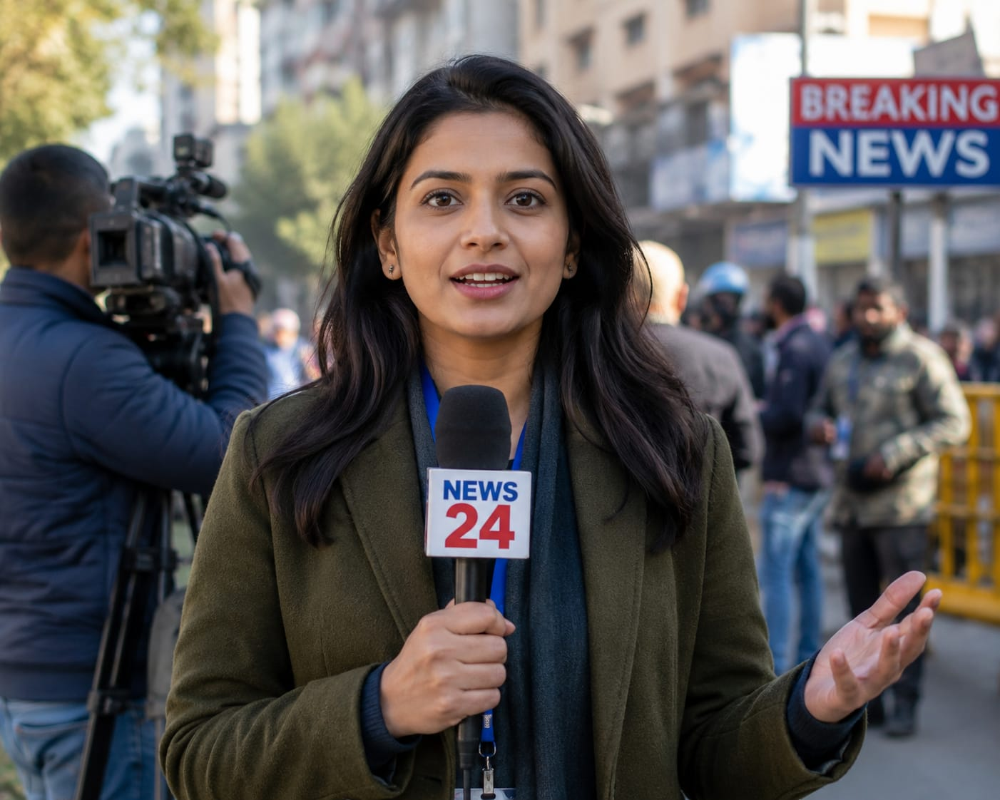

- When you hear news on TV, YouTube, or read newspapers, have you ever thought "how they are getting all these informations?"
- Someone carefully collects this news behind the scenes.
- These people are called Journalists.
- 👉 In simple words: Journalists find and share important news with people.
Journalist
🧑💻 What Do They Do?

🎓 How to Become a Journalist
These courses help students learn basic reporting, news writing, and media communication skills early.
Diploma in Journalism
Duration: 6 Months – 1 Year
Eligibility: Class 10 Pass
Entrance Exam: No Exam (Direct admission)
Certificate in Citizen Journalism
Duration: 3 Months
Eligibility: Class 10 Pass
Entrance Exam: No Exam (Skill-based tasks)
Note: Most journalism certificate courses after 10th do not require entrance exams.
These programs teach students broadcast news, anchoring, reporting, media communication, and journalism ethics.
B.A. (Hons) in Journalism and Mass Communication (BAJMC)
Duration: 3 – 4 Years
Eligibility: 10+2 Pass (Any stream)
Entrance Exam: CUET UG / Merit Based
BJMC (Bachelor of Journalism and Mass Communication)
Duration: 3 Years
Eligibility: 10+2 Pass (Any stream)
Entrance Exam: CUET UG / IPU CET / University-specific Entrance
Bachelor of Mass Media (BMM)
Duration: 3 Years
Eligibility: 10+2 Pass
Entrance Exam: University-specific entrance / Merit-based
B.Sc. in Electronic Media
Duration: 3 Years
Eligibility: 10+2 Pass
Entrance Exam: CUET UG / Merit-based
📝 Exam Details
(Click on the exam name to see full details)
CUET UG IPU CET University Entrance Exam Merit-based AdmissionNote: Some colleges admit students through CUET UG, while others use merit-based or university-level entrance exams.
Designed for graduates from any stream to specialize in investigative reporting, TV anchoring, digital journalism, and media production.
Post Graduate Diploma in English Journalism
Duration: 1 Year
Eligibility: Bachelor’s Degree (Any stream)
Exam: CUET PG
M.A. in Mass Communication & Journalism
Duration: 2 Years
Eligibility: Bachelor’s Degree
Entrance Exam: CUET PG / University Entrance
PG Diploma in Radio and TV Journalism
Duration: 1 Year
Eligibility: Bachelor’s Degree
Entrance Exam: CUET PG / Institute Test
📝 Exam Details
(Click on the exam name to see full details)
CUET PG University Entrance Exam Institute TestNote: Many postgraduate journalism programs accept students through CUET PG, while some institutes conduct their own entrance tests or interviews.
These self-paced courses help students learn reporting, news writing, investigative journalism, and digital media skills from anywhere.
Journalism Skills for Engaged Citizens
Duration: 15 Hours
Eligibility: Open to all
Provider: University of Melbourne via Coursera
Become a Journalist: Report the News
Duration: 1 – 2 Months (Self-paced)
Eligibility: Open to all (Beginner level)
Provider: Michigan State University via Coursera
Investigative Journalism Masterclass
Duration: 8 Hours
Eligibility: Open to all
Provider: Udemy
Note: Most online journalism courses are beginner-friendly and can be completed from home at your own pace.
Note:
(Age limits, marks, and admission process may vary depending on the college or state. These courses are available in many colleges and universities across India. You can choose colleges based on your location, budget, and entrance exams.)
🏛️ Top Colleges for Journalist
(Tap on a college to view the details)After 10th (Certificates & Short-Term)
YMCA Institute for Media Studies & Information Technology, New Delhi Bharatiya Vidya Bhavan (Various City Campuses) AAFT (Asian Academy of Film and Television), NoidaAfter 12th (Degrees & Professional Diplomas)
Delhi University (Delhi College of Arts and Commerce / LSR), New Delhi Symbiosis Institute of Media & Communication (SIMC), Pune St. Xavier's College, Mumbai Christ University, BengaluruSTEP 1
Imagine you are working as a journalist.
STEP 2
You hear that a major accident happened in a factory.
STEP 3
You visit the place and collect all the important information.
STEP 4
You interview people and eyewitnesses to understand what happened.
STEP 5
Based on the details, you write a news report.
STEP 6
Finally, your report is published on TV or online media.
STEP 7
If this excites you, this career may suit you.
Where do Journalists work? (Job Roles + Growth)
These are some journalism and media roles you can explore.
You usually start with beginner roles and grow with experience.
🔵 Beginner Roles
📝
Junior Reporter
(After BAJMC / BJMC / BMM)
Gathers local news and writes basic event reports.
📰
Content / News Writer
(After BAJMC / BJMC / BMM)
Writes quick news updates and summaries for media websites.
🎙️
Script Assistant
(After B.Sc. in Electronic Media)
Helps check facts and draft scripts for news and radio broadcasts.
🔵 Mid-Level Roles
📢
News Reporter
(After BAJMC / BJMC + Experience)
Interviews people and covers live breaking news stories.
📺
TV Anchor / Presenter
(After B.Sc. in Electronic Media / BJMC + Experience)
Hosts live studio news bulletins, debates, and special programs.
✏️
Sub-Editor
(After BAJMC / BJMC + Experience)
Reviews reports, corrects grammar, and creates news headlines.
🟣 Advanced Roles
🗂️
News Editor
(After PG Diploma in English Journalism + Experience)
Decides which stories get published and manages reporting teams.
🎬
Radio / TV Producer
(After PG Diploma in Radio and TV Journalism + Experience)
Oversees the creative and technical production of news programs.
🏢
Editor-in-Chief
(After M.A. in Mass Communication & Journalism + Experience)
Controls the editorial direction, policies, and strategy of the news organization.
🌐
International Content Agencies
To create blogs, website content, and marketing materials for global brands.
💻
Global Freelance Platforms
They connect you with international clients through platforms like Upwork and Fiverr.
🏢
Remote Corporate Roles
They allow you to work from India for overseas technology and media companies.
📰
Digital Publishing Platforms
They help writers publish blogs, newsletters, and articles for worldwide audiences.
(Click Yes or No for each question)
1. Do you like knowing about what is happening around the world?
2. Do you follow news on a regular basis?
3. Have you ever thought about sharing important news with people?
4. Do you like asking questions and finding information?
5. Would you like a career where you report real-world events and stories?